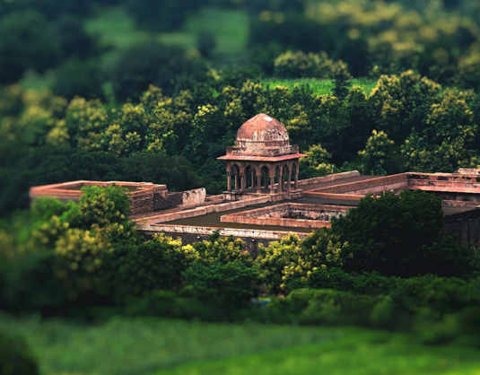

|  |
DestinationsMadhya Pradesh, often referred to as the "Heart of India," boasts a rich tapestry of tourism destinations that captivate travelers with their cultural heritage and natural beauty. Khajuraho's exquisite temples, adorned with intricate erotic sculptures, showcase the region's architectural marvels. The ancient city of Ujjain, one of the holiest in Hinduism, draws pilgrims to the Kumbh Mela and Mahakaleshwar Jyotirlinga. The serene landscapes of Pachmarhi, nestled in the Satpura Range, offer a tranquil retreat. The historic city of Gwalior, with its majestic fort and vibrant culture, invites exploration. From the wildlife haven of Kanha National Park to the serene banks of the Narmada at Bhedaghat, Madhya Pradesh presents a diverse array of destinations for every traveler. Know More |
CultureMadhya Pradesh's cultural tapestry is woven with threads of tradition, art, and spirituality, creating a vibrant tableau that resonates with heritage. The state is a living museum of folk arts, with captivating performances like Gond and Bhil tribal dances, reflecting the rich indigenous traditions. The classical dance form of Tansen Sangeet Samaroh in Gwalior pays homage to the legendary musician Tansen, while the Khajuraho Dance Festival showcases classical dance against the backdrop of the iconic temples. The annual Malwa Utsav celebrates the diversity of Madhya Pradesh's cultural heritage through music, dance, and culinary delights, providing visitors with a immersive experience into the soulful essence of the state's cultural ethos. Know More |

|

|
AdventuresMadhya Pradesh is a haven for adventure enthusiasts, offering a kaleidoscope of thrilling experiences amidst its diverse landscapes. The Satpura and Vindhya mountain ranges provide a playground for trekking and rock climbing, with Pachmarhi being a popular base for such escapades. The Narmada River's turbulent waters beckon white-water rafting aficionados in places like Bhedaghat. For wildlife enthusiasts, Kanha and Bandhavgarh National Parks offer exhilarating jungle safaris, allowing encounters with majestic tigers and diverse flora and fauna. Balloon safaris over the picturesque landscapes of Orchha provide a unique perspective, while the Betwa River tempts adventure seekers with exciting water sports. Madhya Pradesh, a treasure trove of adrenaline-pumping activities, promises unforgettable escapades for thrill-seekers. Know More |
Travel ToolExploring Madhya Pradesh is made seamless with an array of efficient travel tools that enhance the tourist experience. The state's well-connected road network ensures smooth travel between cities, while numerous state-run and private buses cater to varied budgets. The railway system, with major junctions like Bhopal and Indore, facilitates convenient inter-city travel. Additionally, air travel is simplified by well-equipped airports in cities like Bhopal and Jabalpur. The Madhya Pradesh Tourism app and website act as valuable digital companions, offering information on destinations, accommodations, and itineraries, ensuring that visitors can navigate the state's cultural, historical, and adventure offerings effortlessly. Know More |
|